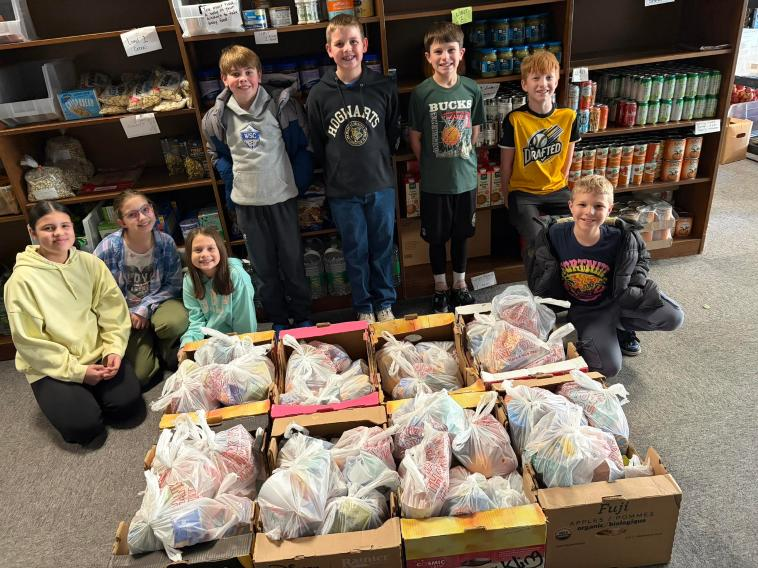

The Bread Basket is a certified 501(c)(3) non-profit organization dedicated to fighting hunger and providing essential resources in Dodge and Jefferson counties, Wisconsin. We operate with no government funding, relying entirely on community support, local farmers, and generous donors.
Our mission is simple: provide fresh, nutritious food and clothing in a dignified, choice-based setting where guests select what they need for the week. We require no paperwork, no income guidelines, and no questions asked. If you're struggling, you're welcome here.

Weekend Meal Program
Launched as a pilot program at the beginning of this school year, our Weekend Meal Program helps provide children with food to take home over the weekend. The response has been deeply encouraging. We have received heartfelt gratitude from the children receiving these meals, and again and again they share how thankful they are for the fresh fruit. We also value that the lunches are easy enough for children to prepare for themselves, making the program both practical and empowering.
One especially meaningful part of this program is our Weekly Warriors, the children who help pack food for other children. Their involvement creates a wonderful opportunity for young people to volunteer, serve their community, and learn the value of compassion in action.
As the need continues, so does our commitment to this program. With continued donations and community support, we hope to expand the Weekend Meal Program and reach even more children in the future.
- 📅 Monday: 12:00 PM – 7:00 PM
- 📅 Tuesday: 11:00 AM – 2:00 PM
- 📅 Friday: 12:00 PM – 4:00 PM
- 📍 208 S 3rd St, Watertown, WI 53094
- 📞 (920) 390-2575
- 📧 breadbasketwttn@gmail.com